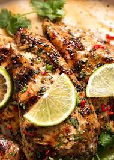

This recipe is a recipe that I found on reddit. As of 10/22, I have not tried it yet, but I will be making an attempt as of tomorrow (10/23).
I will give updates whether it is a good recipe
So two to four hours of marination is plenty
I should experiment with the times, there's no RIGHT time
Preferebly want to put it in a ziplock bag